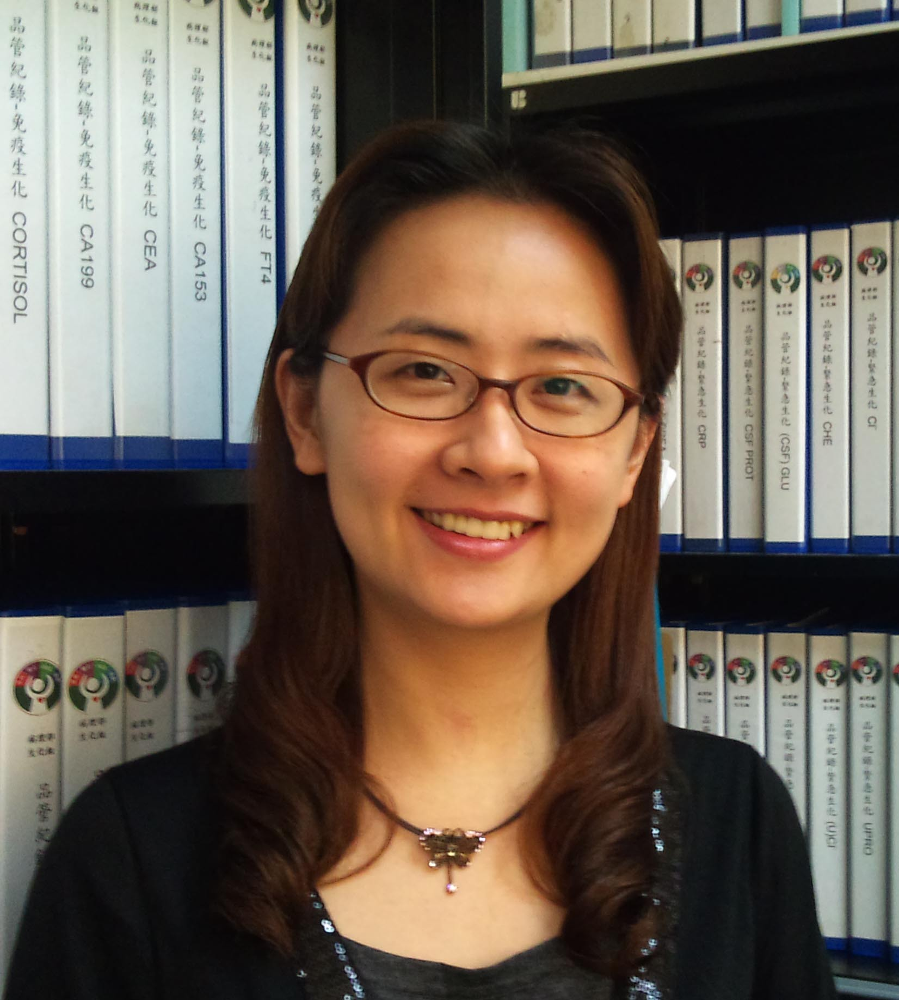

個人資料
更新日期：2013/12/31

蔡瑋倫 講師
Wei-Lun Tsai
辦公室地點：成大醫院病理部 生化組
電子信箱：
weilunt@gmail.com
學歷
經歷
- 國立成功大學附設醫院 病理部 生化醫檢師 (1996~迄今)
- 國立成功大學醫技系講師 Instructor, National Chen Kung University R.O.C.
期刊論文
- Chiung-Yu Chen, Bei-Tzu Wang, Zih-Ciang Wu, Wen-Ting Yu, Po-Ju Lin, Tsai WL, Shu-Chu Shiesh. Glycine ameliorates liver injury and vitamin D deficiency induced by bile duct ligation. Clinica Chimica Acta, 2013; 420:150-154.
- Chiung-Yu Chen, Wei-Lun Tsai, Po-Ju Lin and Shu-Chu Shiesh*. The value of serum ischemia-modified albumin for assessing liver function in patients with chronic liver disease. Clin Chem Lab Med 2011;49:1817–1821.
- I-Chien Wu, Xi-Zhang Lin, Ping-Fen Liu, Wei-Lun Tsai, Shu-Chu Shiesh. Low serum testosterone and frailty in older men and women. Maturitas 2010;67: 348-352 (SCI).
- Chiung-Yu Chen, Wei-Lun Tsai, Hui-Chun Wu, Mei-Jywan Syu, Cheng-Chung Wu , Shu-Chu Shiesh. Diagnostic role of biliary pancreatic elastase for cholangiocarcinoma in patients with cholestasis. Clinica Chimica Acta2008; 390: 82-89.
- Ju-Fei Hsu, Woei-Jer Chuang, Shu-Chu Shiesh, Yee-Shin Lin, Ching-Chuan Liu, Chih-Chieh Wang, Tzu-Fun Fu, Jui-He Tsai, Wei-Lun Tsai, Yu-Jun Huang, Yi-Hsuan Hsieh, Jiunn-Jong Wu, Ming-Ter Lin, and Wenya Huang. Streptococcal pyrogenic exotoxin B cleaved human S-adenosylhomocysteine hydrolase and induced hypermethioninemia. J of Infectious Diseases 2008; 198:367-74.
研討會論文
- Tsai WL, Po-Hung Lin , Wen-Wei Chang , Wen-Jin Kuo, Shu-Chu Shiesh. Application of Lean and Automation to Improve STAT Lab Turnaround Time. The 20th IFCC - EFLM European Congress of Clinical Chemistry and Laboratory Medicine, May 19-23, 2013.
- Tsai, Wei-Lun, Kou, Hsuan-Cheng, Chang, Wen-Wei, Shiesh, Shu-Chu, Chan, Shih-Hung. Using high-sensitivity cardiac troponin assays to detect small myocardial injury caused by percutaneous coronary intervention. The 10th Chinese Laboratory Medicine Conference Nov. 5-6, 2011.
- Wei-Lun Tsai, Chiung-Yu Chen, Yi-Jynn Chen, Chin-Yang Lin, Shu-Chu Shiesh. Functional Capacity of Albumin in Patients with Decompensated Cirrhosis. The 21st IFCC International Congress of Clinical Chemistry and Laboratory Medicine, May 15-19, 2011.
- Shu-Chu Shiesh, Chiung-Yu Chen, Po-Ju Lin, Wei-Lun Tsai. The Protective Effects of Glycine on Bile Duct Ligation-Induced Cholestasis. The 21st IFCC International Congress of Clinical Chemistry and Laboratory Medicine, May 15-19, 2011.
- Zih-Ciang Wu, Wei-Lun Tsai, I-Chien Wu, Shu-Chu Shiesh. Serum 25-Hydroxy Vitamin D and Frailty in Elderly Chinese. The 21st IFCC International Congress of Clinical Chemistry and Laboratory Medicine, May 15-19, 2011.
- Chen Yu-Ling, Chiang Shih-Ting, Wu Yan-Feng, Kou Hsuan-Cheng, Lai Wen-Hsin, Hung Tsui-Lien, Tsai Wei-Lun. The Effect of Acidification and Collection for Measurement of Urinary Calcium and Phosphorus. The Annual Meeting of the Association of Laboratory Medicine, ROC, October 23-24, 2010.
- Tsai WL, Lin PH, Chang WW, Shiesh SC. Assessment of Serum Light Chains in Patients with Monoclonal Gammopathies. The 18th IFCC-EFCC European Congress of Clinical Chemistry and Laboratory Medicine, June 8, 2009.
- Liu PF, Tsai WL, Wu IC, Shiesh SC. Serum Levels of Testosterone in Elderly Women Correlate with Frailty Status. The 18th IFCC-EFCC European Congress of Clinical Chemistry and Laboratory Medicine, June 8, 2009.
- Shiesh SC, Tsai WL, Liu PF, Wu YC, Lin JT. Serum Testosterone Concentrations and Frailty. The 18th IFCC-EFCC European Congress of Clinical Chemistry and Laboratory Medicine, June 10, 2009.
- Jinn-Yuan Hsu, Wei-Lun Tsai, Shu-Chu Shiesh. Measurement of Argininosuccinate Synthetase Activity by Liquid Chromatography-Tandem Mass Spectrometry. The Annual Meeting of the Association of Laboratory Medicine, ROC 2008.
- Tsai Wei-Lun, Lin Po-Hung, Chang Wen-Wei, Chen Jung-Chin, Shiesh Shu-Chu. Performance Characteristics of the Abbott ARCHITECT i2000SR Tacrolimus Assay. The Annual Meeting of the Association of Laboratory Medicine, ROC 2008.
- Kao CY, Lin JT, Tsai WL, Shiesh SC. Quantitation of indocyanine green in human plasma by liquid chromatography tandem mass spectrometry. The 20th International Congress of Clinical Chemistry and Laboratory Medicine, September 29, 2008
- Shiesh SC, Tsai WL, Lin JT, Chou YY, Lin SJ. Diagnostic role of serum total bile acids, C-reactive protein and pancreatic secretory trypsin inhibitor in neonatal citrullinemia. The 20th International Congress of Clinical Chemistry and Laboratory Medicine, September 29, 2008.
- Shu-Chu Shiesh, Jing-Ting Lin, Wei-Lun Tsai, Yen-Yin Chou, Shio-Jean Lin. Serum Pancreatic Secretory Trypsin Inhibitor and C-Reactive Protein for Neonatal Onset Type II Citrullinemia Diagnosis.Clin Chem 2008; 54.
- Wei-Lun Tsai, Lan-Guei Huang, Mei-Ing Wang and Shu-Chu Shiesh.Evaluation of the reproductive hormones on the Roche E170 analyzer-compared to radioimmunoassay. Clin Chem 2008; 54: C52.
- Wei-Lun Tsai, Jing-Ting Lin, Lan-Guei Huang, Shu-Chu Shiesh. Performance Characteristics of the Roche E170 Intact PTH Assay. The 23th Joint Annual Conference of Biomedical Sciences March 2008.
- Shiesh SC, Tsai WL ,Chen CY, Syu MJ. Pancreatic elastase is a bile marker for malignancy. Clin Chem 2007; 53: C32.
- Shiesh SC, Chen CY, Tsai WL, Syu MJ. Proteomic Analysis of Human Bile for Biomarker Discovery. Invited speaker at the Symposium “Proteomics and Biomarkers” in the 22th Joint Annual Conference of Biomedical Sciences March 2007.
- Tsai WL, Chen CY, Liu YF and Shiesh SC. Induction of heme oxygenase-1 prevents gallstone formation: changes of amino acids in bile. The 27th World Congress of Biomedical Laboratory Science September 15-19 2006.
- Shiesh SC, Tsai WL, Lin SI, Syu MJ, Yang CH, Lai CY, Lin XZ, Chou TC, Lee GB, Yang MC, Ting JM, Liu BD, Hwang BJ, Do JS, Lin CW, Lin TY, Chen WJ, Ling TR, Ho KC, Huang CY. Using Bilirubin-MIP as Bioseparator to Measure Bile Elastase Activity. The 2nd International Meeting on Microsensors and Microsystems January 15-18 2006.
- Shiesh SC, Tsai WL, Chen CY. The value of biliary amylase and hepatocarcinoma-intestine-pancreas/pancreatitis-associated protein I in diagnosing biliary malignancies. The Annual Meeting of the Association of Laboratory Medicine, ROC 2004.
研究計畫
- Establishment of an ASS Activity Assay by Using Liquid Chromatography Tandem Mass Spectrometry ((NCKUH-9703024)
- Functional Capacity of Albumin in Patients with Decompensated Cirrhosis (NCKUH-9902004)
- The detection of auto-antibodies in the blister of patients with bullous pemphigoid: paper-based ELISA studies utilizing NC16A domain of BP180 antigen (NCKUH-10208003)
其它
主辦、參與國際會議
無相關資料
教學、研究國際交流
- 受聘至國外大學及學術機構講學次數：無相關資料
- 至國外學術機構訪問次數：無相關資料
- 指導之學生至國外學術機構訪問人次：無相關資料
- 指導之學生至國外大學選讀人次：無相關資料
- 邀請國外教師至本單位訪問人次：無相關資料
- 邀請國外學生至本單位訪問人次：無相關資料
- 與國外教師共同主持研究計畫人次：無相關資料